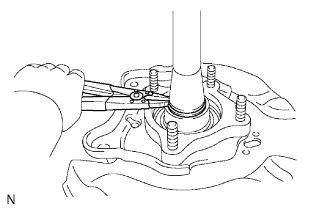
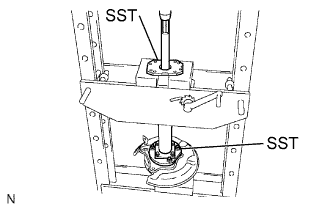
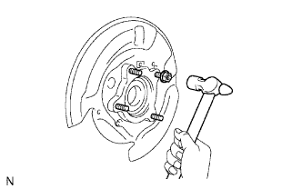
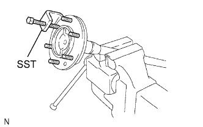

REAR AXLE SHAFT > DISASSEMBLY |
| 1. REMOVE REAR AXLE SHAFT SNAP RING LH |
|  |
Using a snap ring expander, remove the snap ring.
| 2. REMOVE REAR AXLE SHAFT LH |
|  |
Using SST and a press, press out the rear axle shaft.
 |
Grind the rear axle bearing retainer using a grinder, and then remove it with a chisel.
Remove the shaft washer from the axle shaft.
| 3. REMOVE REAR AXLE HUB AND BEARING ASSEMBLY LH |
|  |
Temporarily install 4 nuts to the housing bolts.
Using a hammer, remove the 4 housing bolts and rear axle hub and bearing.
Remove the 4 nuts.
| 4. REMOVE BRAKE DRUM OIL DEFLECTOR LH |
|  |
Using SST, remove the 6 hub bolts.
Remove the deflector and deflector gasket from the rear axle shaft.